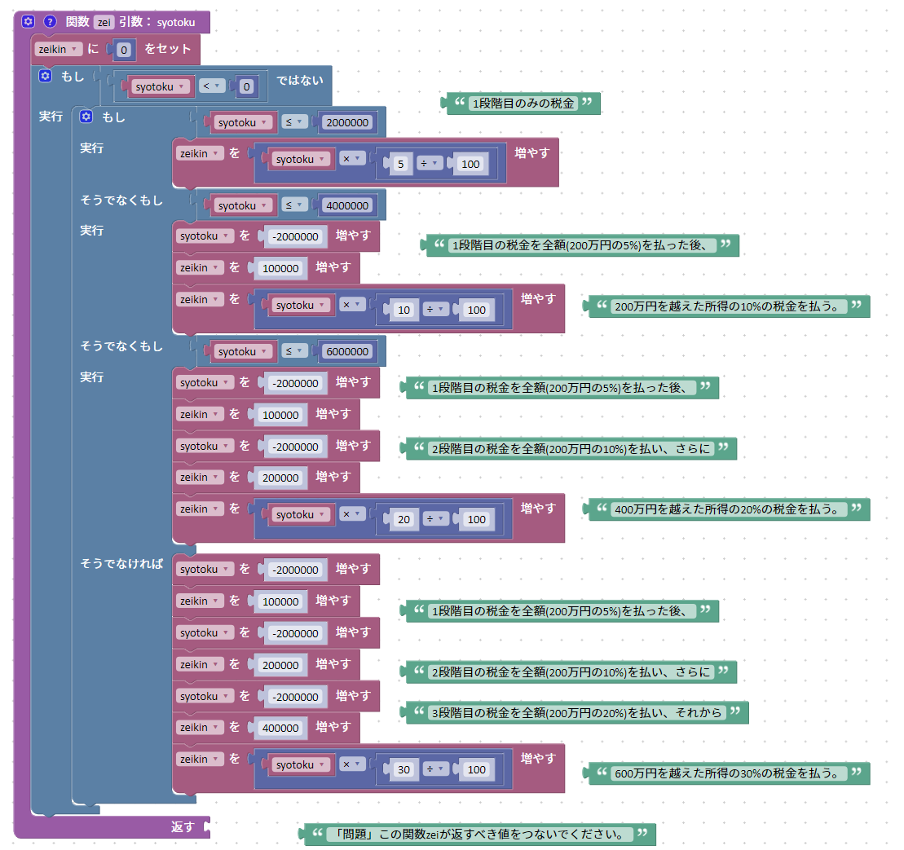
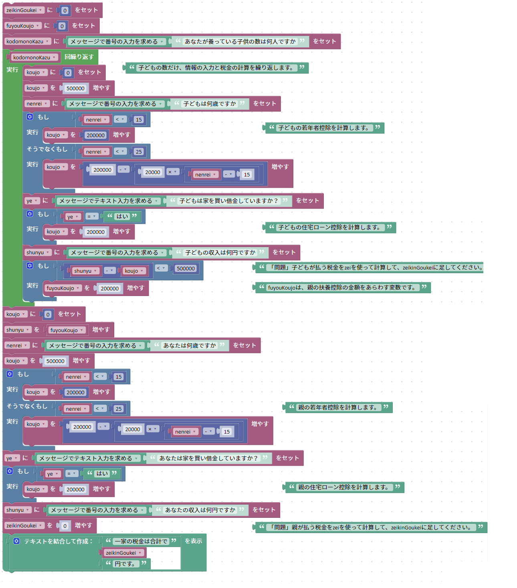

Blockly の関数をつかって、税金の計算プログラムをすっきりさせてみよう


このリンク先に、上のプログラムがあります。このプログラムを直接変更して、以下の問題に取り組んでください。
問題
- プログラムに書かれた「問題」を３つ解いて、プログラムを完成させてください。
- 控除の金額の計算と、情報の入力を交互におこなうのではなく、先に情報を入力を求め、入力された値をもとに控除の金額を計算してください。
(ヒント: 入力を求め、変数にセットする処理を移動するだけの簡単な問題です。繰り返しの外に移動させる必要はありません。)
- 子どもの所得控除の計算と、親の所得控除の計算には、共通部分があります。関数を利用して、これを一つにまとめてください。
(ヒント: 「関数」メニューに関数を定義するブロックがあります。「返す」がある方のブロックを選んでください。関数定義ブロックの歯車アイコンのボタンを押すことで、関数が受け付ける入力（引数）を増やすことができます。何を入力にして、何を返したらいいかを考えてください。)
- 問題１で作った、「払う税金をzei関数を使い計算し、zeikinGoukeiに足してください。」で書いた部分をJavaScriptで書いてみてください。
- Blocklyは、ブロックを使って書いたプログラムをJavaScriptに自動で変換する機能があります。変換結果を見て、問題４の答えが正しいか確かめましょう。
(zeikinGoukei = (typeof zeikinGoukei === 'number' ? zeikinGoukei : 0) + ... は、zeikinGoukeiに数が入っていなかった場合のエラー処理が挟まっているだけで、エラー処理を除くと、意味は
zeikinGoukei = zeikinGoukei + ...と同じです。)
- 自動で変換されたJavaScriptの関数をコンソールに入力し、関数にいろいろな値をいれて、うまく計算できるか確かめてください。